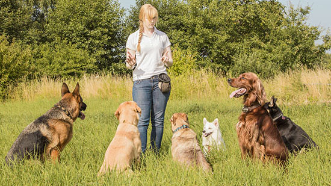
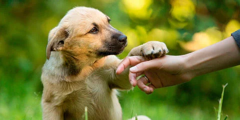

Club del Can
En el Club del Can Somos un grupo dedicado a las necesidades de nuestros clientes en el cuidado canino.
Por eso el adiestramiento canino mejora nuestra capacidad de comunicación con nuestro perro. Algo que favorece a que se cree un vínculo emocional todavía más fuerte con él, ya que no solo somos quienes le cuidamos sino también quienes disfrutamos de su compañía.

Nuestro objetivo es que con los adiestramientos, sus mascotas no solo aprendan la parte de obediencia, sino tambien que aprendan a sociabilizar con otros perros y otros seres humanos

Queres ver a tu perro/a feliz?, Llamanos!!!